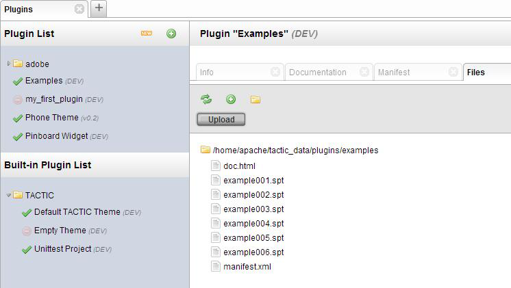
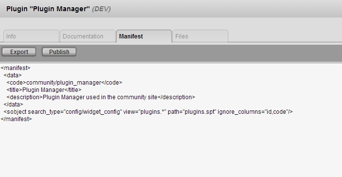

Plugin Manager
The plugin Manager View is where you will be managing all your plugins. From this view, you can create a plugin, fully install a plugin, and modify existing plugins. You can find all your installed plugins in the plugin list at the left hand side of the view. This shows all the plugins you have installed along with all the built-in plugins which have come with your TACTIC installation. After selecting a plugin, you have access to:
Plugin Info:
Documentation:
Manifest file:
Files: The files tab shows the raw folder structure and files of the plugin. From here, a number of file operations can be performed.
What is a technical description of a TACTIC plugin?
A plugin is a self-contained package of files that TACTIC can make use of to extend the base functionality. Virtually any functionality in TACTIC can be made into a plugin.
A plugin can contain:
manifest.xml file
The manifest file is a description of the entries in the database that are owned by the plugin. This allows the plugin manager to extract the appropriate database entries and commit the .spt files. It contains elements like:
data: a collection of name/value pairs that describe information about the plugin
sobject: describes which sobjects the plugin contains. It’s an expression of the form <sobject search_type=”[search_type]”> with attributes:
There are some special attributes for specific search types. The config/widget_config search type has the attribute:
.spt files
".spt" files are database files that contain database schema structure and database data. These files enable TACTIC to read and write database data that is both platform and database independent. This abstractions allows TACTIC plugins to be used on any supported TACTIC platform. An important design criteria of .spt files are that they are human readable even when the database entry contains xml or software code. More importantly, they can be easily diff’ed using standard software tools so that the code produced can show proper diffs using any source code management system (such as Perforce, SVN or Git). This is essential for collaborative work building plugins to delivery to a 3rd party.
Creating the Plugin
Once you are in the plugin manager, you can the New button which creates a new plugin outline. Afterwards, you can start filling in the details like name, type, etc. On creation, a plugin type can be specified. Depending on the plugin type a number of bootstrap data will be created to support the structure of the plugin. After selecting Create, the plugin will be created and you will be able to see it in the plugin list.
If you go to the documentation tab, you will find that you are able to create new documentation if the documentation doesn’t exist. This will create a new file, doc.html, which you can edit now.
To add files to the plugin, select the plugin and go to the files tab. Here, you will find many options like the ability to upload or simply create a new file. The new files that you are uploading or creating are used properly when their purpose is explained in the manifest.xml file.
After customizing the plugin to your needs, you can now package the plugin to perhaps upload to the community site so others can use it. Documentation on packaging can be found in this section under Packaging a Plugin.
Best Practices
Widget config tables should not include code or id columns or they must be explicitly set to values that are guaranteed to be unique on any installation of TACTIC. Otherwise, the plugin should not depend on the value of the code or id column.
This is also true of “custom_scripts” written in the script editor.
When referring to an sobject, always search by code (not id). When doing this, make sure the code contains a namespace that will not conflict with any other plugin.

Plugin Directory
A TACTIC plugin package is simply a .zip file containing all the files of a plugin. Plugins are installed in the following directory:
<TACTIC_DATA_DIR>/plugins
The .zip files are usually stored in:
<TACTIC_DATA_DIR>/dist
Categories of Plugins
Plugins are defined into categories. Due to the flexibility of the plugin architecture, a single plugin can package tools, columns, and themes in any combination. These categories are only used to organize plugins and can also bootstrap common functionality that would be packaged into a plugin.
All of these will have most of the view definitions in the Custom Layout Editor. Each individual view can have a type. See Custom Layout Editor documentation for more information on this.
theme: a theme defines the look and feel of a project as experienced by end users. A theme should have the following requirements:
Publishing the Plugin
To package your created plugin to the tactic data directory, select the plugin and go to the manifest tab. Here, you can make sure that the plugin is named and versioned appropriately. You now need to make sure that the manifest you’ve wrote is exported, exporting saves the manifest data you have there to the manifest.xml file.You can now select Publish and TACTIC will package all the files and create a .zip file of the plugin folder from the root plugin folder (ie: <TACTIC_DATA_DIR>/plugins ). When a version is published, the folder of the current plugin is taken and copied to a new folder with the name <PLUGIN_CODE>-<VERSION>. Note that the PLUGIN_CODE can have “/” to present folders.
Creating Plugin for Scripts
The scripts can be contained within any folder level in the hierarchy. The plugin will allow you to have access to every one of those scripts.
On the server, go to the TACTIC installation location and locate the tactic_data/plugins folder. For example, /home/tactic/tactic_data/plugins. In this "plugins" folder, paste the folder of your scripts here.
This specific "plugins" folder is tied directly into the TACTIC UI. By pasting your folder of scripts here, a series of plugins are created for each of the lowest level folders. Each of these lowest level folders could contain many different scripts. Essentially, only one folder could contain all the scripts and this would be the plugin. The entire folder structure with subfolders and final low level folders (plugins) will show up in the TACTIC "Plugin Manager" in the Administrative layer of TACTIC.
For example, if there is a top level folder called "example_scripts" with a lower level folder called "python_scripts" that contained all of the scripts. If this entire "example_scripts" folder was pasted into the /home/tactic/tactic_data/plugins location on the server, the "Plugin Manager" in TACTIC will show that "example_scripts" is a drop down folder and underneath there is a plugin called "python_scripts" available in TACTIC for activation. This "python_scripts" plugin would contain all of your scripts.
from example_scripts.python_scripts import python_class
Updating Plugins with New and Modified Scripts
To update the plugins with more scripts or apply changes to the scripts in the plugins, perform the following:
1) Go to the "Plugin Manager" and select the plugin (package of scripts) to be modified.
2) In the "Info" tab in the view, click the "Remove" button. This will deactivate the plugin. Wait for a message to appear that indicates that the plugin was removed successfully.
3) Replace or modify any scripts in the folder or plugin that was deactivated in the /home/tactic/tactic_data/plugins location.
4) Once any new or modified scripts are added, go back to the "Plugin Manager", select the plugin that was modified, and in the "Info" tab in the view, click on the "Activate" button. Wait for a message to indicate the plugin activated successfully.
5) Refresh the browser to ensure proper activation.
6) You will now have access to the modified scripts from the Script Editor in TACTIC.